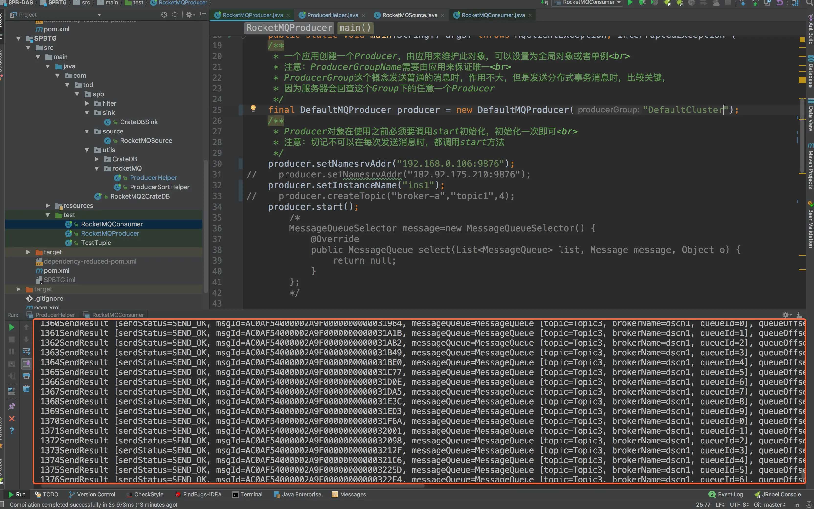
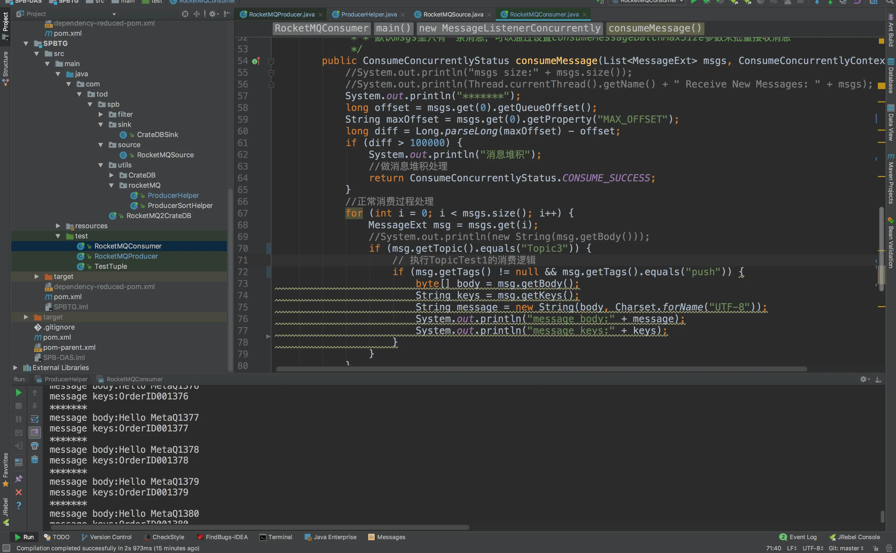

RocketMQ Install
RocketMQ消息队列安装以及使用，RocketMQ安装常见问题，以及解决方案。
摘要: 我要装个RocketMQ
rocketmq 安装
安装rocketmq需要环境：
1、jdk1.7以上
2、maven
3、git
*jdk1.8*
wget http://112firshme11224.test.upcdn.net/blog/tmp/jdk-8u92-linux-x64.tar.gz
*maven下载：*
wget http://mirrors.hust.edu.cn/apache/maven/maven-3/3.3.9/binaries/apache-maven-3.3.9-bin.tar.gz
tar xf apache-maven-3.3.9-bin.tar.gz -C /opt/
*git下载：*
yum install git -y
*环境变量如下：*
export PATH USER LOGNAME MAIL HOSTNAME HISTSIZE HISTCONTROL
export JAVA\_HOME=/opt/jdk/jdk1.8.0\_65
export JRE\_HOME=/opt/jdk/jdk1.8.0\_65/jre
export CLASSPATH=.:$JAVA\_HOME/lib/dt.jar:$JAVA\_HOME/lib/tools.jar:$JRE\_HOME/lib:$CLASSPATH
export PATH=$PATH:$JAVA\_HOME/bin/
export PATH=$PATH:/usr/local/go/bin
export GOPATH=/usr/local/
export M2\_HOME=/opt/apache-maven-3.3.9
export PATH=$PATH:$M2\_HOME/bin
export ROCKETMQ\_HOME=/opt/RocketMQ-3.5.8/devenv
export NAMESRV\_ADDR=127.0.0.1:9876
*使配置文件生效*
source /etc/profile
*检测maven*
[root@dscn1 ~]# mvn -v
Apache Maven 3.3.9 (bb52d8502b132ec0a5a3f4c09453c07478323dc5; 2015-11-11T00:41:47+08:00)
Maven home: /opt/apache-maven-3.3.9
Java version: 1.8.0\_65, vendor: Oracle Corporation
Java home: /opt/jdk/jdk1.8.0\_65/jre
Default locale: zh\_CN, platform encoding: UTF-8
OS name: "linux", version: "2.6.32-573.22.1.el6.x86\_64", arch: "amd64", family: "unix"
[toc]
##一、正式开始安装rocketmq
1、下载安装
a）wget https://github.com/alibaba/RocketMQ/archive/v3.5.8.tar.gz ###下载包
b）tar -xf v3.5.8.tar.gz -C /opt/ ###解压
c）cd /opt/RocketMQ-3.5.8 ###进入解压后目录
d）sh install.sh ###进行安装(下载国外的数据，时间较长)
2、修改文件内存
cd /opt/RocketMQ-3.5.8/devenv/bin
#vim修改runbroker.sh、runserver.sh两个文件
-------------------------------------
JAVA\_OPT="${JAVA\_OPT} -server -Xms512m -Xmx512m -Xmn256m -XX:PermSize=128m -XX:MaxPermSize=320m" ###Xms启动时内存，Xmx最大内存，Xmn最小内存
--------------------------------------
3、启动nameserver
nohup sh mqnamesrv >/var/log/ns.log 2>&1 &
4、验证nameserver是否启动：
tail -f /var/log/ns.log ###查看日志有无错误信息
5、启动broker
在启动borker之前需要指定nameserver地址：
echo "export NAMESRV\_ADDR=127.0.0.1:9876" >> /etc/profile ###写入到环境变量，或者直接
-n来指定
nohup sh mqbroker -n 192.168.0.106:9876 autoCreateTopicEnable=true > /var/log/mq.log 2>&1 &
6、检验是否开启
tail -f /var/log/mq.log ###查看日志有无错误信息
7、关闭的命令：
sh mqshutdown namesrv
sh mqshutdown broker
8、创建队列
sh mqadmin updateTopic -b "192.168.0.106:10911" -t Topic1 -r 10 -w 10 ###-b broker的ip和端口 -t java程序中定义的名字
9、更改broker配置文件，更改ip,使外网可以访问
sh mqadmin updateBrokerConfig -b 192.168.0.106:10911 -k brokerIP1 -v 192.168.0.106
10、以此输入下面两个命令：
bash tools.sh com.alibaba.rocketmq.example.quickstart.Producer ###生产者(生产队列)
bash tools.sh com.alibaba.rocketmq.example.quickstart.Consumer ###消费者（清理队列）
如果报错是内存不够，就改
runbroker.sh、runserver.sh两个文件
如果启动报错是不知道主机：
检查/etc/sysconfig/network 中的记录的hostname是否和/etc/hosts中的主机名绑定一致，如果不一致请确保一致
在/etc/hosts中添加 192.168.1.118 hostname的名称(master01)跟/etc/sysconfig/network一样(master01)
开启9876rocketmq的nameserver端口 #vim /etc/sysconfig/iptables
二、一主一从的配置
除了启动步骤不同。其余与上面一主的配置相同：
1、修改/opt/RocketMQ-3.5.8/devenv/bin/runbroker.sh、runserver.sh两个文件：
JAVA\_OPT="${JAVA\_OPT} -server -Xms512m -Xmx512m -Xmn256m -XX:PermSize=128m -XX:MaxPermSize=320m" ###Xms启动时内存，Xmx最大内存，Xmn最小内存
2、主的机器修改/opt/RocketMQ-3.5.8/devenv/conf/2m-2s-async/broker-a.properties
namesrvAddr=192.168.0.106:9876;192.168.0.107:9876
brokerIP1=192.168.0.106
brokerClusterName=DefaultCluster
brokerName=broker-a
brokerId=0
deleteWhen=04
fileReservedTime=48
brokerRole=ASYNC\_MASTER
flushDiskType=ASYNC\_FLUSH
storePathRootDir=/opt/RocketMQ-3.4.6
storePathCommitLog=/opt/RocketMQ-3.4.6/log/commitlog
3、从的机器修改/opt/RocketMQ-3.5.8/devenv/conf/2m-2s-async/broker-a-s.properties
namesrvAddr=192.168.0.106:9876;192.168.0.107:9876
brokerIP1=192.168.0.107
brokerClusterName=DefaultCluster
brokerName=broker-a
brokerId=1
deleteWhen=04
fileReservedTime=48
brokerRole=SLAVE
flushDiskType=ASYNC\_FLUSH
storePathRootDir=/opt/RocketMQ-3.4.6
storePathCommitLog=/opt/RocketMQ-3.4.6/log/commitlog
参考内容和解释如下：
#所属集群名字
brokerClusterName=rocketmq-cluster
#broker名字，注意此处不同的配置文件填写的不一样
brokerName=broker-a|broker-b
#0 表示 Master， >0 表示 Slave
brokerId=0
#nameServer地址，分号分割
namesrvAddr=rocketmq-nameserver1:9876;rocketmq-nameserver2:9876
#在发送消息时，自动创建服务器不存在的topic，默认创建的队列数
defaultTopicQueueNums=4
#是否允许 Broker 自动创建Topic，建议线下开启，线上关闭
autoCreateTopicEnable=true
#是否允许 Broker 自动创建订阅组，建议线下开启，线上关闭
autoCreateSubscriptionGroup=true
#Broker 对外服务的监听端口
listenPort=10911
#删除文件时间点，默认凌晨 0点
deleteWhen=00
#文件保留时间，默认 48 小时
fileReservedTime=120
#commitLog每个文件的大小默认1G
mapedFileSizeCommitLog=1073741824
#ConsumeQueue每个文件默认存30W条，根据业务情况调整
mapedFileSizeConsumeQueue=300000
#destroyMapedFileIntervalForcibly=120000
#redeleteHangedFileInterval=120000
#检测物理文件磁盘空间
diskMaxUsedSpaceRatio=88
#存储路径
storePathRootDir=/opt/rocketmq/data
#commitLog 存储路径
storePathCommitLog=/opt/rocketmq/data/commitlog
#消费队列存储路径存储路径
storePathConsumeQueue=/opt/rocketmq/data/consumequeue
#消息索引存储路径
storePathIndex=/opt/rocketmq/data/index
#checkpoint 文件存储路径
storeCheckpoint=/opt/rocketmq/data/checkpoint
#abort 文件存储路径
abortFile=/opt/rocketmq/data/abort
#限制的消息大小
maxMessageSize=65536
#flushCommitLogLeastPages=4
#flushConsumeQueueLeastPages=2
#flushCommitLogThoroughInterval=10000
#flushConsumeQueueThoroughInterval=60000
#Broker 的角色
#- ASYNC\_MASTER 异步复制Master
#- SYNC\_MASTER 同步双写Master
#- SLAVE
brokerRole=ASYNC\_MASTER
#刷盘方式
#- ASYNC\_FLUSH 异步刷盘
#- SYNC\_FLUSH 同步刷盘
flushDiskType=ASYNC\_FLUSH
#checkTransactionMessageEnable=false
#发消息线程池数量
#sendMessageThreadPoolNums=128
#拉消息线程池数量
#pullMessageThreadPoolNums=128
4、两个机器上都启动nameserver:
nohup sh mqnamesrv >/var/log/ns.log 2>&1 &
5、主的机器启动broker：
nohup sh mqbroker -c ../conf/2m-2s-async/broker-a.properties > /var/log/mq.log 2>&1 &
6、从的机器启动broker：
nohup sh mqbroker -c ../conf/2m-2s-async/broker-a-s.properties > /var/log/mq.log 2>&1 &
运行成功的图！
